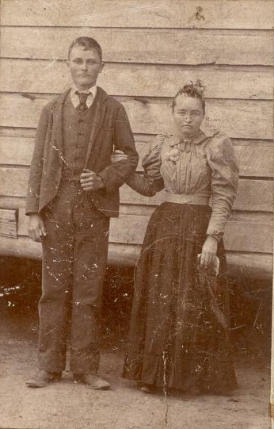
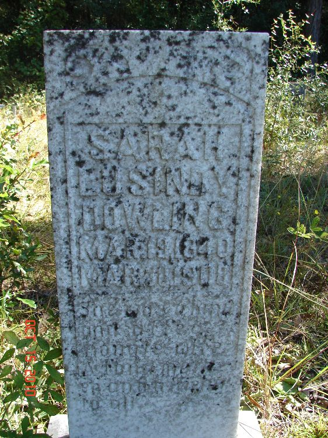

Sarah Lusindy Wadsworth
1840–1908
Life Events
Born: March 19, 1840
Died: March 30, 1908
Family
Spouses:
Children
Military Service
No military service information has been added.
Biography
Sarah Lusindy Wadsworth, also known as Sallie, was born March 19, 1840, according to her gravestone at Brady Cemetery in Florida. Her birthplace remains uncertain. The 1860 United States Census records her birthplace as Florida, while the 1880 census transcription identifies Georgia.
Sarah married Greenberry Blanton on December 6, 1857, in Madison County, Florida. Their marriage record identifies her as Sarah M. Wadsworth.
In the 1860 United States Census, Sarah and Greenberry were living in Lowndes County, Georgia, with two children, Emma E. Blanton and William T. Blanton.
Greenberry's whereabouts after 1860 remain uncertain. The published family history Aldermans in America reports that he died around 1863, but this date has not been independently verified.
Sarah subsequently married Everett Darling on March 28, 1879, in Madison County, Florida. Everett's surname also appears as Dowling in historical records.
In the 1880 United States Census, Sarah was living with Everett in Madison County, Florida. The household also included Liddy A. Blanton, age four, identified as Everett's stepdaughter. Liddy's biological father has not been established.
Sarah and Everett were the parents of Mary Frances Darling Mathis, born June 4, 1880, according to Mary's Florida death certificate. Mary's 1939 Social Security record gives her birth year as 1881, so the year remains subject to conflicting evidence.
Sarah's middle name is recorded inconsistently in surviving historical records. Her 1857 marriage record identifies her as Sarah M. Wadsworth. The 1880 census transcription identifies her as Sarah L. Dowling, while her gravestone identifies her as Sarah Lusindy Dowling. The reason for this discrepancy has not been established.
Sarah died March 30, 1908, according to her gravestone, and is buried at Brady Cemetery in Florida.
Photos

Grave & Burial

Brady Cemetery, Lee, Madison County, Florida
Sources
-
1879 Marriage License — Everett Darling and Sarah Wadsworth
Type: Marriage RecordMarriage license and certification for Everett Darling and Sarah Wadsworth in Madison County, Florida. Family research identifies their marriage date as March 28, 1879, in Lee, Florida.
Location: Lee, Madison County, Florida
Supports: Marriage of Everett Darling and Sarah Wadsworth, Marriage recorded in Madison County, Florida, Reported marriage date of March 28, 1879
-
1880 U.S. Federal Census — Everett and Sarah Dowling Household
Type: CensusThe 1880 U.S. Federal Census records Everett Dowling, approximately age 26, his wife Sarah, approximately age 40, and Liddy Blanton, approximately age 4, identified as Everett's stepdaughter. The household appears in Enumeration District 99, Madison County, Florida. The census surname is recorded or transcribed as Dowling, while other family records use Darling. Liddy's biological father has not been established. The census was enumerated June 16, 1880.
Location: Ellaville and Norton's Creek Precinct, Madison County, Florida
Supports: Everett and Sarah were living together as husband and wife in 1880, Everett was approximately 26 years old, Sarah was approximately 40 years old, Liddy Blanton was approximately 4 years old, Liddy was identified as Everett's stepdaughter, Household residence in Madison County, Florida, in 1880
-
1885 Florida State Census — Everett Darling Family
Type: census1885 Florida State Census, Madison County, Florida, documenting the household of Everett Darling and his wife Sarah Wadsworth. Lydia, Everett's stepdaughter, is enumerated immediately below Sarah, followed by their daughters Mary and Martha Darling. Lydia's biological father has not been identified. This census provides evidence of the blended Darling-Wadsworth household.
-
1900 U.S. Census — Everett Darling and Sarah Wadsworth
Type: census1900 United States Census, Madison Precinct, Madison County, Florida, enumerated June 20, 1900, sheet 18. Everett Darling and his wife Sarah appear on lines 85–86, immediately following the household of Sarah's brother Burton Wadsworth, his wife Elizabeth, and their children Louis, Gordon, and Marrie. Everett is recorded as a farmer whose birthplace was listed as New York, although other family records identify Connecticut and Rhode Island. Sarah's birthplace is recorded as Georgia. The neighboring households document the proximity of the Darling and Wadsworth families.
-
Aldermans in America — Blanton Family, Page 59
Type: Published Family HistoryPage 59 of Aldermans in America identifies Green Berry Blanton as a son of David Blanton and Nancy Goff. It reports his birth as May 25, 1829, death as circa 1863, and wife as Sallie Wadsworth. These are claims from a compiled family history. The reported death date has not been independently verified, and the page does not establish that Greenberry died during the Civil War.
Supports: Published family history identifies Green Berry Blanton as a son of David Blanton and Nancy Goff, Published family history reports Green Berry's birth as May 25, 1829, Published family history reports Green Berry's death as circa 1863, Published family history identifies Sallie Wadsworth as Green Berry's wife